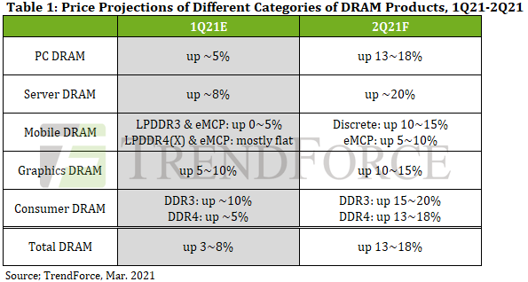
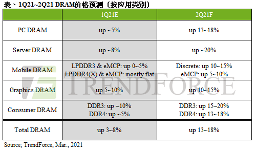
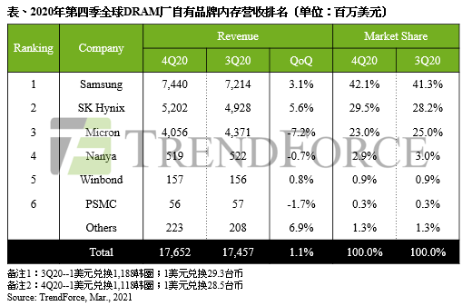

Market Trends
1. Server DRAM Contract Prices Projected to Rise by 10-15% QoQ in 2Q21 Owing to Limited Production Capacities(TrendForce 2021-02-25)
Since 3Q20, memory suppliers’ production capacities allocated to server DRAM have dropped to about 30% of the total DRAM production capacity……given that second quarters have traditionally marked the cyclical upturn in server shipment, server DRAM demand is thus expected to ramp up in 2Q21, in turn prompting suppliers to raise their quotes for server DRAM. TrendForce is therefore revising up the QoQ increase in server DRAM contract prices for 2Q21 from the original forecast of 8-13% to the adjusted forecast of 10-15%, with certain transactions potentially involving as much as a 20% price hike.
Server DRAM contract prices are likely to increase by more than 40% throughout the year as demand is likely to persist through 3Q21
Server DRAM prices are projected to rise by nearly 20% QoQ due to cyclical upturn in server
Mobile DRAM contract prices are projected to remain bullish due to smartphone brands’ expanded procurement activities in advance of market risks
Graphics DRAM contract prices are projected to rise by 10-15% QoQ due to high demand for graphics cards from cryptocurrency miners
Consumer DRAM contract prices are projected to rise by up to 20% QoQ due to intensifying shortage
……

终端产品、资料中心需求热，第二季PC DRAM合约价将大幅上扬13~18%(集邦咨询 2021-03-16)
根据TrendForce集邦咨询最新调查，DRAM价格已正式进入上涨周期，第二季受到终端产品需求持续畅旺，以及资料中心需求回升的带动，买方急欲提高DRAM库存水位。因此，DRAM均价历经第一季约3~8%的上涨后，预估第二季合约价涨幅将大幅上扬13~18%。
笔电需求旺厂商急备货，PC DRAM价格季涨13~18%
Server DRAM第二季将迎来采购高峰，估价格季增近20%
预期心理刺激买方扩大采购，Mobile DRAM价格将持续走扬
虚拟货币带动显卡需求所致，Graphics DRAM价格季增10-15%
Consumer DRAM供不应求状况加剧，单季涨幅高达20%
…………

2.China semiconductor trade association establishes work group with U.S. counterpart(REUTERS 2021-03-11)
The Chinese Semiconductor Industry Association (CSIA), a major trade association for China’s chip industry, will establish a working group with its U.S-based counterpart, the organisation announced on Thursday.
The announcement on the CSIA website, which caused a surge in prices of semiconductor related stocks in China, could signal closer cooperation as the two countries as they spar over technology.
The CSIA said in its post it would form a joint working group with Washington-based Semiconductor Industry Association (SIA), with each side being represented by 10 chip companies.
The working group will meet twice a year to discuss issues such as intellectual property, trade policy and encryption.
…………
量增价跌走势持续，2020年第四季DRAM总产值仅增1.1%(集邦咨询 2021-03-04)
2020年第四季DRAM总产值达176.5亿美元，季增1.1%。整体市况归因于2020年第三季下旬华为（Huawei）被列入出口限制清单，使中国智能手机品牌Oppo、Vivo、小米（Xiaomi）积极加大零部件采购力道，欲抢食华为市占，因而带动第四季各家DRAM供应商出货表现。然受到server业者仍持续库存调节的影响，DRAM价格受到压抑，多数原厂2020年第四季营收表现与上季差异不大，仅美光（Micron）受到营运天数不同而有明显下滑。
展望2021年第一季，包括PC、mobile、graphics及consumer DRAM在内的需求仍维持稳健。历经两季库存调整，部分server DRAM业者重启新一轮备货，加上2020年12月初美光跳电事件影响，今年第一季DRAM产品价格全面正式起涨。TrendForce集邦咨询预估第一季将呈现量平价涨的走势，不过由于是市况反转的第一个季度，且需求面仍位处淡季，估计量与价成长幅度不大，整体DRAM产值可能较去年第四季小幅成长。
…………

Vendor News
1.Micron Ends 3D XPoint Memory(Forbes, 2021-03-16)
Micron announced that it will increase its investment in memory products that leverage the Compute Express Link (CXL) and that it is ceasing development of its 3D XPoint technology. The company said that it wanted to shift resources from 3D XPoint to CXL-enabled memory products. This latter statement is interesting, since Intel has been a big driver of CXL in order to boost the use of its Optane (3D XPoint) memory.
…………
Micron announced that it was ending its development of the 3D XPoint technology that it co-developed with Intel. The company said that it would instead focus on memory products for CXL-enabled storage systems. Although 3D XPoint is being retired, it is not clear that Micron is abandoning phase change memory and may use it in future CXL products. With Micron’s exit, Intel is the sole provider of 3D XPoint products that it brands as Optane memory.
…………
2.SK hynix Starts Mass-production of LPDDR5 Mobile DRAM with Industry’s Largest Capacity(SK hynix 2021-03-08)
SK hynix Inc. (or “the Company”, www.skhynix.com) announced that it has started mass-production of 18GB (gigabyte) LPDDR5 mobile DRAM, which offers the largest capacity in the industry.
This product will be equipped in premium smartphones to support an optimal environment for games with high resolution image and also high quality videos. SK hynix also expects that application will continue expanding to include the latest technologies, including ultra-high-performance camera applications and artificial intelligence (AI).
…………
The new product runs at up to 6,400Mbps (megabits-per-second), around 20% faster than the mobile DRAM (LPDDR5 with 5,500Mbps) for existing smartphones, a data rate that is capable of transferring ten 5GB FHD (Full-HD) movies per second.
…………
SK hynix supplied its very first 18GB LPDDR5 products into the upcoming ASUS ‘Republic of Gamers (ROG) 5’ gaming smartphone, marking the start of full-scale volume production.
3.Samsung Develops Industry’s First HKMG-Based DDR5 Memory; Ideal for Bandwidth-Intensive Advanced Computing Applications(Samsung 2021-03-25)
Samsung Electronics, the world leader in advanced memory technology, today announced that it has expanded its DDR5 DRAM memory portfolio with the industry’s first 512GB DDR5 module based on High-K Metal Gate (HKMG) process technology. Delivering more than twice the performance of DDR4 at up to 7,200 megabits per second (Mbps), the new DDR5 will be capable of orchestrating the most extreme compute-hungry, high-bandwidth workloads in supercomputing, artificial intelligence (AI) and machine learning (ML), as well as data analytics applications
…………
Samsung’s DDR5 will utilize highly advanced HKMG technology that has been traditionally used in logic semiconductors. With continued scaling down of DRAM structures, the insulation layer has thinned, leading to a higher leakage current. By replacing the insulator with HKMG material, Samsung’s DDR5 will be able to reduce the leakage and reach new heights in performance. This new memory will also use approximately 13% less power, making it especially suitable for datacenters where energy efficiency is becoming increasingly critical.
…………
Leveraging through-silicon via (TSV) technology, Samsung’s DDR5 stacks eight layers of 16Gb DRAM chips to offer the largest capacity of 512GB. TSV was first utilized in DRAM in 2014 when Samsung introduced server modules with capacities up to 256GB.
……
4.Longsys Launches DDR5 Memory and Publicizes Test Data(CISION, 2021-03-17)
Longsys Electronics launches the Longsys DDR5 memory module (ES1). The company has done so in order to keep up with the development of storage technologies, to meet expectations from industry professionals and users regarding future product technology development, and to provide more possibilities for the future of storage industry applications. Moreover, Longsys’ FORESEE, a technical storage brand, and Lexar, a storage brand for high-end consumer goods, will also provide strong support in their main areas of application.
国产Longsys DDR5内存横空出世 多项实测数据首次公开(cnBeta 2021-03-16)
江波龙电子今天正式发布Longsys DDR5内存模组产品（ES1），涉及两款全新架构产品原型：分别是1Rank x8和2Rank x8标准型PC Unbuffered DIMM 288PIN On-die-ECC。
其中，展示的测试实例采用了Intel AlderLake-S ADP-S CRB开发板，搭配Longsys DDR5 32GB 4800内存模组，并配置Windows 10 Pro x64操作系统，分别通过鲁大师和AIDA64两个熟知的软件展示DDR5的真实数据。
…………